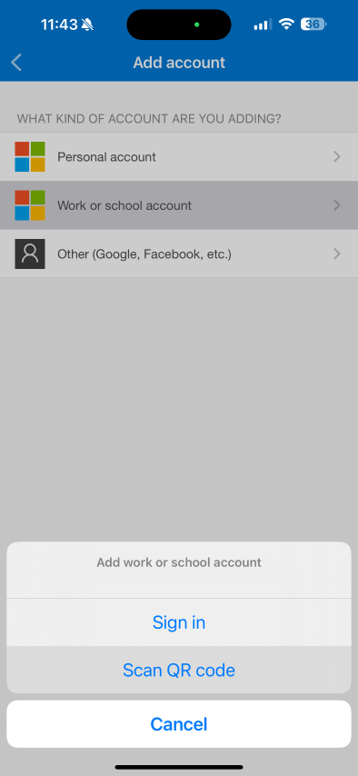
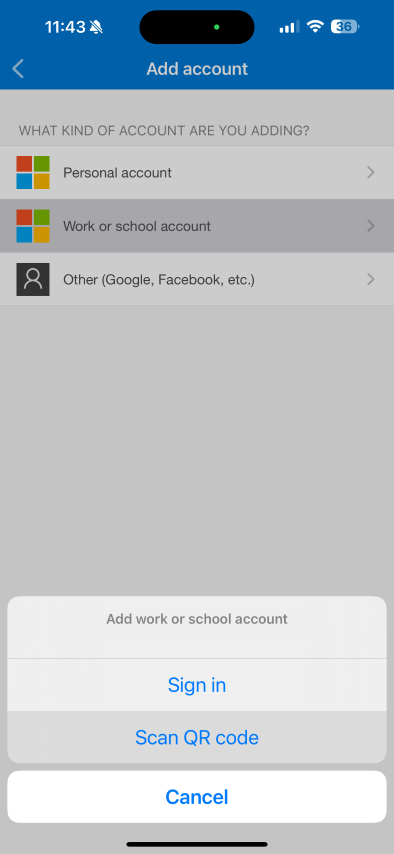

New Device Setup Guide
A step-by-step guide to setting up your new company device with Microsoft Autopilot.
Welcome!
This guide will walk you through setting up your new Windows computer. Your device is managed by Microsoft Autopilot, which automatically configures it with the necessary settings and applications.
Before you begin:
- Ensure your device is plugged into a power source.
- You will need a reliable internet connection (Wi-Fi or Ethernet).
- Have your smartphone available for setting up your account security.
- Important: The setup process involves several steps and may require you to sign in multiple times. Your computer might also restart automatically. This is a normal part of the process.
Part 1: Initial Device Setup
1. Power On & Select Region
Power on your new laptop. At the first screen, confirm your country or region is set to United States and click Yes.

2. Connect to a Network
Connect to a Wi-Fi network. Select your network, check Connect automatically, and click Connect. Enter the password if needed. Your device will then check for updates.

Part 2: Account Security & Authenticator Setup
Heads up! For this part, you will switch between your computer and your smartphone.
3. Sign In to Your Work Account
At the "Let's set things up for your work or school" screen, enter your full company email address (e.g., employee@ck.cpa) and click Next. You will be prompted for your password on the following screen.

4. Begin Security Setup
To keep your account safe, we require multi-factor authentication. At the "Let's keep your account secure" screen, click Next to begin.

5. Get the Microsoft Authenticator App
Your PC will now prompt you to set up the Authenticator app. If you don't have it, download it from your phone's app store. When you add an account in the app, choose the Sign In option, not "Scan QR code".


6. On Your Phone: Add Your Account
In the Authenticator app, tap to add an account (+), select Work or school account, and then tap Sign in. Follow the prompts to sign in with your company email and password on your phone.
 

7. Verify Your Identity
After signing in on your phone, the Authenticator app will show a One-time password code. Switch back to your computer, enter this code into the prompt, and click Verify.

Part 3: Automatic Device Configuration
8. Device Configuration Begins
Your computer will now begin the main configuration process. This will take several minutes. You may be required to enter another code from your authenticator app during this step. Your device may also restart automatically. Please be patient and do not turn off the computer.

9. Security Setup Confirmed
Once the initial security check is complete, you will see a "Success!" message. Click Done. The device will continue setting up in the background.

Part 4: Final Sign-in
10. Sign In After Restart
After the automated setup completes, your computer may restart. At the Windows sign-in screen, sign in using your full company email and password.

Part 5: Windows Hello Setup
11. Set Up Your Fingerprint (Recommended)
Windows Hello provides a fast, secure sign-in method. When prompted, click Yes, set up. Follow the on-screen instructions, repeatedly placing and lifting your finger on the laptop's fingerprint sensor.


12. Create a PIN (Required)
As a backup, you must create a Windows Hello PIN. Click Next on the "Create a PIN" screen. Enter and confirm a new PIN that is at least 6 characters long, then click OK.


Part 6: Setup Complete!
Welcome to Your New Desktop
You're all set! After creating your PIN, you will be taken to your new Windows desktop. Over the next 30 minutes, your computer will automatically install company-managed applications like the Microsoft 365 suite (Outlook, Word, Excel, etc.) in the background.
If you need to install other approved applications, such as Google Chrome, you can do so from the Company Portal app. Simply open the Start Menu, find and open Company Portal, and browse for the software you need.